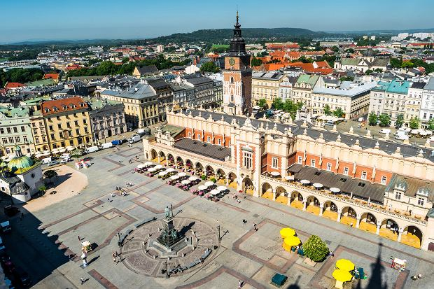

STARE MISTO W KRAKOWIE

Miejsce wpisane na Listę Światowego Dziedzictwa w 1978r., czyli jako jedno z pierwszych 12 obiektów na świecie. Obszar wpisany obejmuje Stare Miasto w obrębie dawnych murów, Wzgórze Wawelskie oraz dzielnicę Kazimierz ze Stradomiem. W 2010 r. została utworzona strefa buforowa dla obszaru wpisanego.
Stare Miasto Krakowa, dawnej stolicy Polski, rozciąga się u stóp Zamku Królewskiego na Wawelu. XIII-wieczne miasto kupieckie posiada największy w Europie rynek, liczne zabytkowe kamienice oraz bogato wyposażone pałace i kościoły. O świetnej przeszłości Krakowa świadczą fragmenty XIV-wiecznych murów miejskich, położona na południu miasta średniowieczna dzielnica Kazimierz, z zabytkowymi synagogami, Uniwersytet Jagielloński oraz katedra gotycka, w której pochowani są królowie Polski.